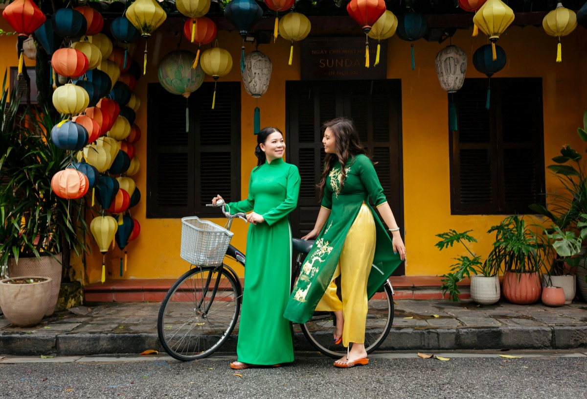
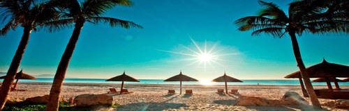
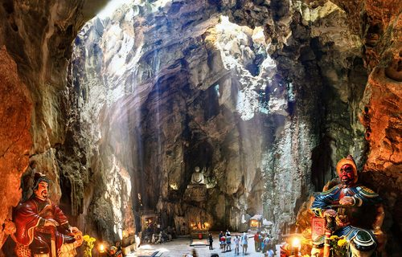
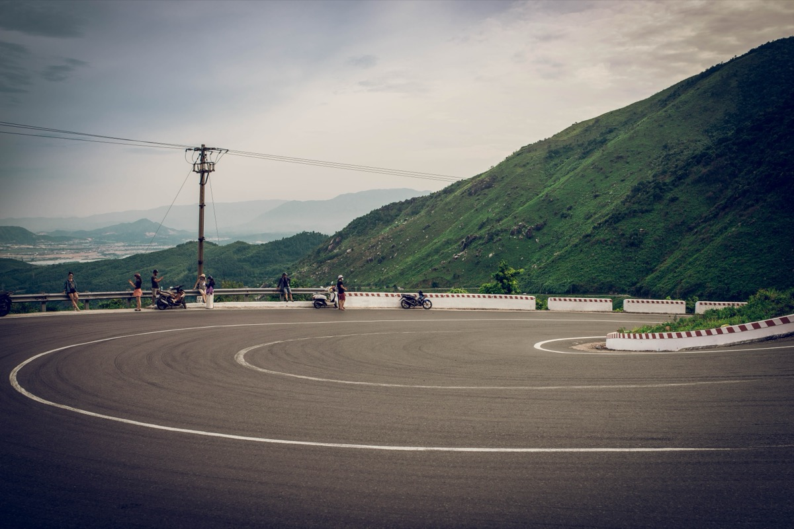
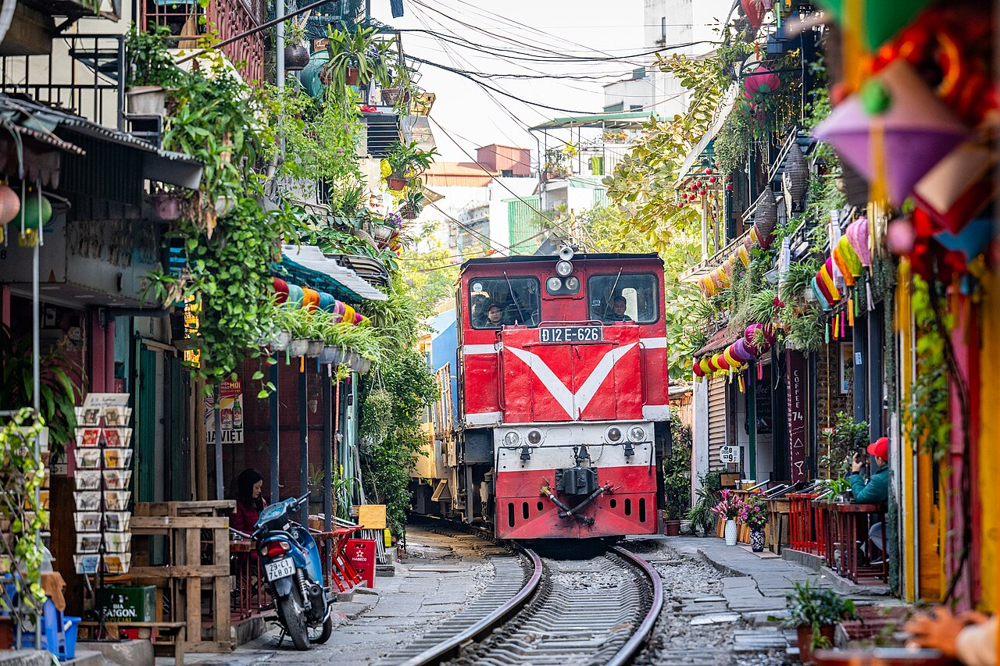

Itinerary · Da Nang · 2026
The Da Nang Itinerary That Works
What to do with 1, 3 or 5 days in Da Nang: the beach, Hoi An, Son Tra and the trips actually worth your time.
How long do you actually need?

See the highlights
Beach + city sights + Han RiverA sprint. You'll see the best of it but won't have time to sit with any of it. Works as a layover or stopover plan.
The essential trip
Da Nang + Hoi AnEnough time for the beach, Son Tra, Marble Mountains and a full day in Hoi An. The minimum that feels complete.

The trip we'd choose
Enjoy Da Nang instead of rushing itAdds a major day trip, time for coffee, nightlife, and one genuinely slow day. Five days is enough to actually like the city.
5 Days in Da Nang
The trip we'd recommend
Five days gives you enough time to actually enjoy Da Nang instead of just checking attractions off a list. Three days is the essential trip, but five is the one you'll remember.
- Proper beach time without rushing
- Son Tra Peninsula at your pace
- A full day in Hoi An
- Marble Mountains
- Han River evenings
- One major day trip: Hai Van or Ba Na Hills
- Time for cafes, food and nightlife
- A genuinely slow day when you need it
If someone asks us how long to spend in Da Nang, five days is the answer.
3 Days in Da Nang
The minimum trip that feels complete
Three days gives you My Khe, Son Tra, Marble Mountains, Han River, and a full day in Hoi An, without feeling like you only passed through. For travelers fitting Da Nang into a wider Vietnam trip, three days is the number.
- My Khe Beach
- Son Tra & Linh Ung
- Marble Mountains
- Han River evening
- Full day in Hoi An

Da Nang Signature Pick: 3 Days1 Day: The Essentials

My Khe Beach
Swim before the heat sets in. Walk the beach, grab bánh mì from a vendor, watch the local exercise groups. Best hour of the day on the sand.
Son Tra & Linh Ung
Grab to Linh Ung Pagoda. Walk up to the Lady Buddha viewpoint. Watch for douc langurs on the drive back. Free entry, 20 minutes from My Khe.

Marble Mountains
Grab south (15 min). Caves, pagodas, views from the top. Budget 2 hours. Entry 150,000 VND. Skip if time is short: Cham Museum is the alternative.
TRAVEL TIME: 15 min south by Grab, ~60,000 VND
Han River + Dragon Bridge
Bach Dang waterfront walk. Dinner at a riverside restaurant. Dragon Bridge fire show at 9pm on Friday and Saturday, watch it from the east bank.
GOOD TO KNOW: Dragon Bridge fire show is Fri & Sat 9pm only3 Days: The Complete Picture

My Khe Beach
Early swim, beach walk, local breakfast. My Khe is 30km of clean sand, and the northern end near An Thuong is the best base.
Son Tra & Linh Ung Pagoda
Lady Buddha, peninsula viewpoints, douc langurs in the forest. Grab or scooter. Return by noon for lunch.
Grab or scooter · 20 minLunch + Cham Museum
Mì Quảng or bún chà cá near An Thuong, then 90 minutes at the Cham Museum (60,000 VND). World's largest Cham sculpture collection.
Han River + Dinner
Bach Dang waterfront walk, riverside dinner. Dragon Bridge fire show at 9pm if it's Friday or Saturday.
Depart for Hoi An
Grab south, 40 minutes, ~250,000 VND. Leave early: Ancient Town before 10am is a different experience to arriving at noon with tour groups.
Grab · 40 min · ~250,000 VNDAncient Town on foot
Japanese Covered Bridge, Hoi An Museum, Tan Ky House, riverside. Old Town tickets: 120,000 VND for 5 sites. Buy at Hoang Dieu Street.
Eat in Hoi An
Cao làu, white rose dumplings, cơm gà. The food in Hoi An is genuinely better than Da Nang's, so don't skip a proper meal here.
An Bang Beach or more town
An Bang Beach is 4km from town, quieter and less commercial. Or keep exploring the old quarter: tailor shops, art galleries.
Night Market or return
Nguyen Hoang Night Market runs from 5pm. Return by Grab after 7pm to avoid peak traffic. Full Hoi An guide →
Marble Mountains
Grab south (15 min). Take the elevator up Thuy Son, walk the caves and pagodas. Budget 2–3 hours. Entry: 150,000 VND.
Grab · 15 min south · ~60,000 VNDNon Nuoc Beach seafood
The beach below the Marble Mountains is quieter than My Khe. Seafood lunch at the local restaurants on Non Nuoc road.
An Thuong + beach
Back to My Khe. Afternoon swim, specialty coffee on An Thuong. Last chance to pick up anything from the street food strip.
Bars on An Thuong
An Thuong 4 has the best concentration of local bars at local prices. Or: nightlife guide →
5 Days: The Full Trip

Hai Van Pass
40km north by scooter or private car. The drive over the pass is the point: switchbacks, ocean on both sides, cloud-level views. Allow 2 hours each way with stops. Best on a clear day.
BEST FOR: scenery, the drive itself, photography. Skip if overcast.Ba Na Hills
35km west. Full day: cable car up, Golden Bridge, French Village, amusement rides, panoramic views. Depart 7am, back by 4pm. Book tickets online, 750,000–1,100,000 VND.
BEST FOR: families, spectacle, first-time visitors. Expect crowds on weekends.Pick one, not both
Both need a full day. Hai Van Pass and Ba Na Hills on back-to-back days is too much. Choose based on your priority: scenery or spectacle.
Beach + coffee
No alarm. My Khe at whatever pace. Specialty coffee on An Thuong: this is the day you finally have time to sit somewhere and not feel like you're wasting it.
Spa or lunch + wander
Da Nang has excellent and inexpensive spas: an hour massage near My Khe runs 200,000–400,000 VND. Long lunch. Shopping at AEON Mall if needed.
Last night out
This is what five days gets you: an evening with nowhere to be. Bars on An Thuong, last swim at sunset, a proper dinner. Best bars guide →
Pick your big day trip

Hai Van Pass
The mountain road between Da Nang and Hue. Switchbacks, ocean views from both sides, cloud-level elevation on clear days. Best by scooter if experienced, private car otherwise.
Ba Na Hills
Full theme-park day in the mountains: the Golden Bridge, French Village, cable car, and mountain views. Book tickets online. Midweek is significantly quieter than weekends.

Hue
Vietnam's former imperial capital, 2.5 hours north by train through the Hai Van Pass. Imperial Citadel, royal tombs, Thien Mu Pagoda. Better as a multi-day stay than a day trip, but doable in one long day.
Don't schedule every hour
Da Nang works best when you leave room to move. The city is easy to navigate, cheap to get around, and genuinely pleasant to sit in. An unplanned afternoon, coffee somewhere, a long lunch, a slow beach hour, is often the part visitors remember most. Build gaps into the plan.
What I'd Do
My Khe or An Thuong works for every plan on this page. Walking distance to the beach, easy Grab access everywhere else.